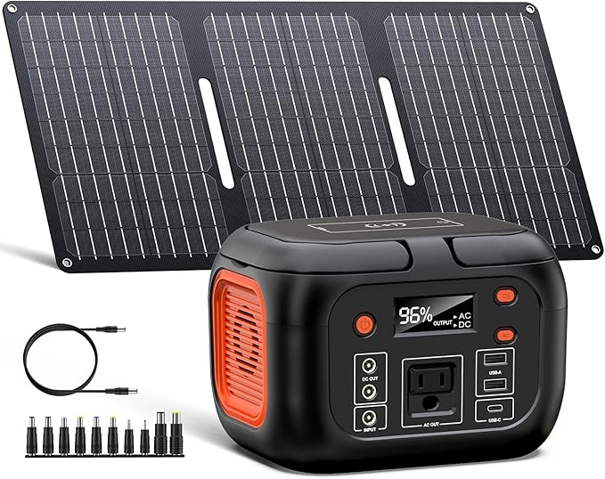
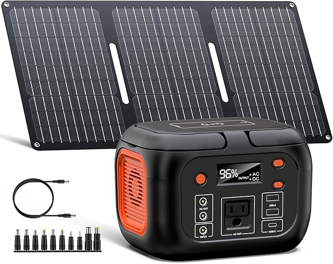
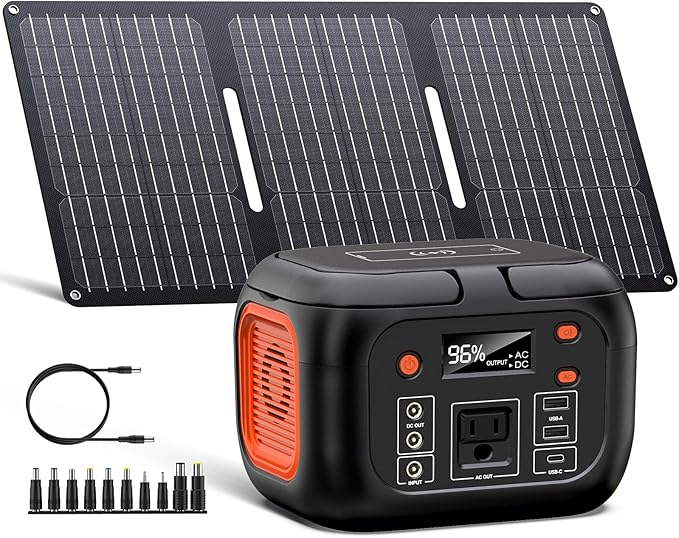

★★★★☆ 4.6 out of 5 – Battle-Tested in the Ozarks

I bought this solar generator because I was tired of relying on the grid. First test wasn’t a chill backyard setup—it was a no-electricity cabin during a heatwave in the Ozarks. No AC. No running water. Just me, my wife, and air so thick it felt like soup. Our daughter was with my parents, so we had the rare chance to disappear for a couple days—but nature didn’t care about our plans.
What made the trip survivable was this little beast of a generator. It kept our phones and my work laptop charged, powered LED lights at night, and ran two clip-on fans in rotation. I’d charge one while running the other and swap them out. That loop gave us constant airflow. Combine that with wet rags soaked in ice water and draped around our necks, and we were actually able to relax. We even managed to sleep. Barely.
The unit is compact enough to slide behind a seat, light enough to carry with one hand, and silent enough that you forget it’s there. It ran everything I needed to keep Grit Gear HQ moving—even deep in the hills. That’s saying something.
Back home, it lives in my wife's car now. Her AC is out until I fix the harness, so she uses it to power fans on her commute. When she parks, the foldable solar panel fits right in the windshield like a sunshade, charging up while blocking the sun. That’s what I call dual purpose.
Whether you’re bugging out, heading off-grid, or just preparing for the next blackout, this thing has your back. It’s already earned its spot in my daily gear. If you wait until you need one, it’ll be too late.
Final thought: This is the only solar generator I’ll ever need. It’s proven, portable, and damn reliable. Get one before the next storm, outage, or emergency reminds you why you should’ve.
🛒 Buy the Solar Generator Now on Amazon